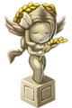

果实介绍
神像用于保护您的农作物不被自然灾害而影响到产量。如果您没有时间时刻关注您的农场，没有关系，我们都给你想到了。您可以通过商城购买宝石或者挖地的时候随机获得到宝石，那么这些宝石可以兑换下面的各种神像，有了这些保护之神，什么土地长草、土地干旱、作物长虫等等都是浮云。
-
名称：弑草之神 介绍：保护所有土地不受杂草危害。 兑换：绿宝石x5(有效期2天)
-
名称：屠虫之神 介绍：保护所有土地不受虫灾危害。 兑换：紫宝石x5(有效期2天)
-
名称：雨露之神 介绍：保护所有土地不受干旱危害。 兑换：蓝宝石x5(有效期2天)
-
名称：丰收之神 介绍：保证所有土地的产量奖励最大化。 兑换：黄宝石x5(有效期2天)
-
名称：瑞雪女神 介绍：瑞雪女神的恩赐，不允许其他作物存在。 兑换：农场房屋等级达到6级以上（包含6级）才可以激活‘瑞雪女神’。
神像是由宝石兑换获得，不同宝石兑换不同的神像。都有哪些宝石呢？我们如何得到宝石呢？请参考下面的表格。
| 名称 | 兑换神像 | 获取方式 | |
|---|---|---|---|
| 绿宝石 | 弑草之神 | 随机获得、商店购买 | |
| 紫宝石 | 屠虫之神 | 随机获得、商店购买 | |
| 蓝宝石 | 雨露之神 | 随机获得、商店购买 | |
| 黄宝石 | 丰收之神 | 随机获得 |